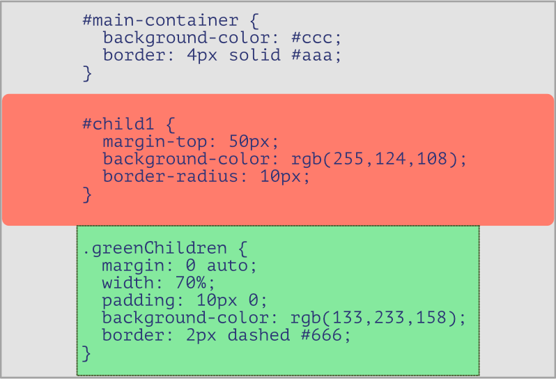
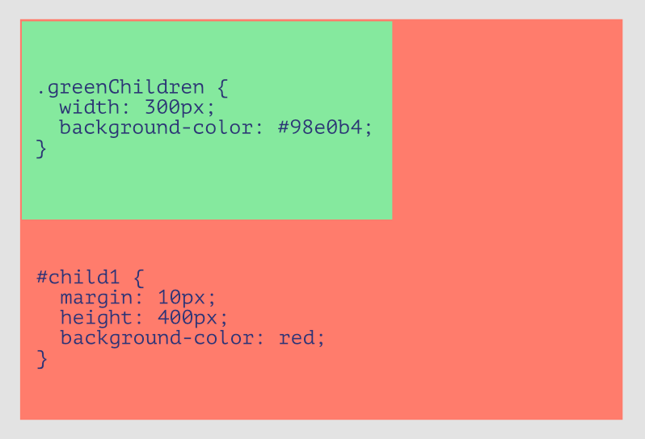
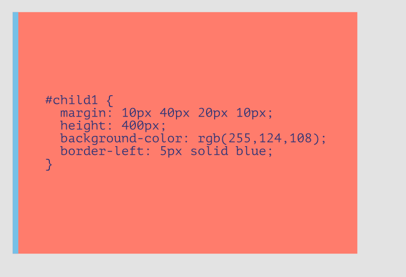

Box Model
Although we have mentioned about padding, borders and margins before, it was still unclear just as to how exactly it fitted in with an element. Well, to clarify that, let me now introduce you to the box model
.
Not only do elements behave like inline or block elements as seen on the last section of the HTML chapter, they are like boxes from a styling perspective.
At the very core, you have the element's content, whose window is just big enough to contain it.
Following, you find the layer of padding wrapped all arround the content and before the border. If any colour is defined for the element's background, the padding too will be coloured.
Then comes the border, which as you see does not only contain the element's content, but also it's padding. When placing elements on the same line, remember that the border too has to be accounted for when calculating their width and height.
Last and certainly not least comes the margin. Remember that the margin is purely intended to create transparent gaps between the element (from its border) and the surrounding ones.
If two elements next to each other have the same margin against each other (ie one has a bottom margin of 10px and the one below a top margin of the same value), the gap between them will be of 10px and not 20px. In fact margins do not add to one another but simply merge, and if the two have different values, the bigger one will be applied.
So there you have it. Understanding this idea is key to a better control over the element's layout and behavior, so before ending the chapter, let's practise over a few examples.
Example 1

Here we have two child elements and their parent container.
Right away we see that the parent container was given the id main-container
(remember: an id selector starts with #), and its style declarations are quite basic, simply giving it an hexadecimal grey colour and an all around even border.
Its first child too was given an id. It is recommended that ids are as descriptive as possible to better understand the CSS code and what the targeted element is.
From the layout perspective, the element does not start right at the top of its parent (the standard position), which is explained by the transparent gap given to its margin-top. Because no width was specified, it therefore fully extends from side to side by default.
It was also given a red colour via an rgb value, and a border-radius one that we have not seen before, but which rounds an element's corners accordingly to the value provided.
A class name (the . before the name) is used to select the second child.
Its width was defined to 70% of its parent's, and although it should default the child to the parent's left, the margin was set to keep it centered.
Although impossible to see in this scenario, some padding was added to its top and bottom, meaning that the element is higher that it would have been originally, along with a green colour via another rgb value, and a defined all-round dashed border.
Not that hard is it? Let's try another one.
Example 2

In the second and third example, we will not go through the main container as its declarations would have been pretty much the same as for the previous, except for the border. You should however know that unless declared with a specific height, a parent element's height is always big enough to contain and wrap within it all of its children ones.
So in this example, there are two levels of nesting, as #child1 also became a container, being itself nested within the main one.
The height of #child1 has a fixed value, its colour set to red by using a keyword for value, and its margin set to 10px on each side, explaining the gap on each side in relation to its parent container.
Within it, we find a single child on the top left corner, with a green color defined via an hexadecimal value. As .greenChildren has a defined width, and since it's margin was not declared for it to be centered, it is defaulted to that position (remember that unless indicated differently, child elements start at the top left corner of their parent).
Getting the hand of it? Let's try one last one, easier this time.
Example 3

For this last example, we have a single child within the main container element.
The child has once again been given a red colour via an rgb value, as well as a specified height.
This time however, it's border was only defined on the left hand side, leaving the other three without any.
Finally, it's uneven position is due to the uneven values provided to its margin property, whithout which, it would cover all of its parent's width, as well as its height (if none was defined for the parent-container that is).